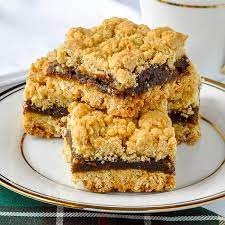

Preheat oven to 355 degrees F (180 degrees C). Grease a 9-inch square baking dish.
Combine dates, water, 2 tablespoons sugar, and vanilla extract in a saucepan; cook and stir over medium heat until filling mixture forms a paste, about 5 minutes. Add more water if filling gets too thick. Remove saucepan from heat and cool.
Place flour in a bowl and rub margarine into flour using your hands until mixture resembles bread crumbs; stir in oats and 3/4 cup sugar. Press 1/2 of the mixture into the prepared baking dish. Spoon filling over over crust, smoothing with the back of the spoon, leaving a thin border between the filling and the edge of the dish. Sprinkle the remaining crumble mixture over filling.
Bake in the preheated oven until top is golden brown, 40 to 45 minutes.